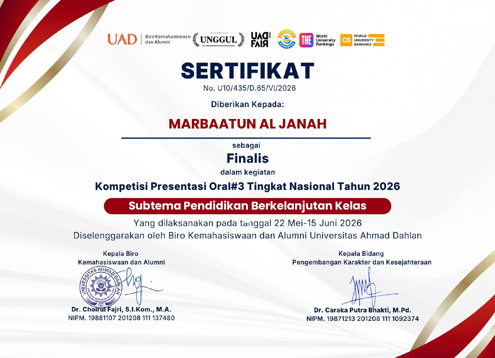
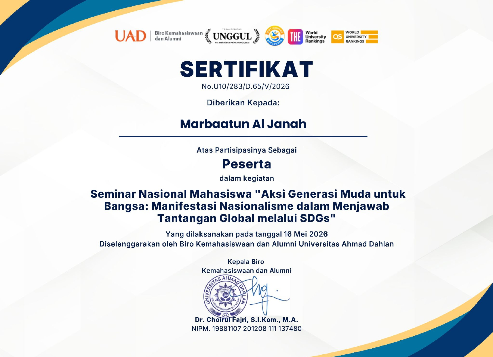
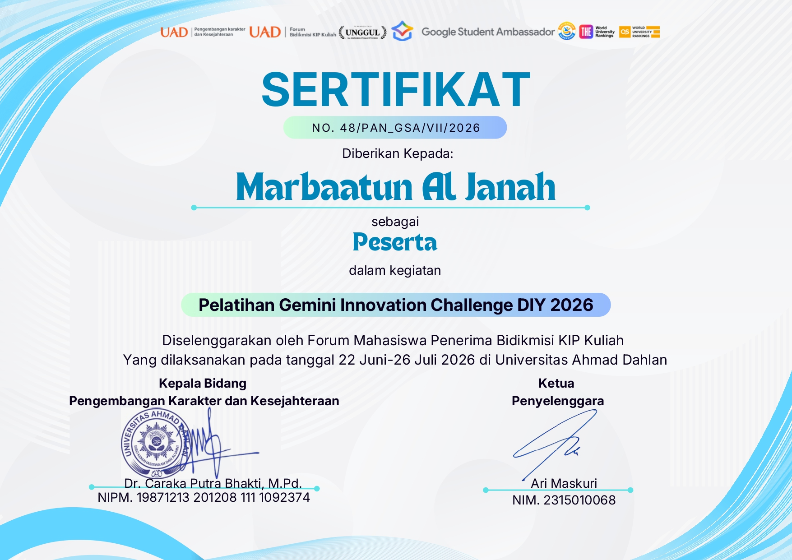

WELCOME TO MY PORTOFOLIO WEBSITE
Accessing Central Portfolio Data...
Identification
MARBAATUN AL JANAH
Mahasiswi aktif program S1 Akuntansi Kelas Internasional di Universitas Ahmad Dahlan yang memiliki ketelitian tinggi dan kemampuan analitis kuat. Memiliki minat mendalam terhadap integrasi literasi keuangan dan perkembangan ekosistem teknologi modern. Berpengalaman nyata dalam mengelola rekapitulasi basis data kemahasiswaan universitas secara rigid, serta aktif mengelola kemitraan strategis (*third party partnership*) di tingkat tim robotik universitas.
External Nodes
20+
Partner Eksternal Robotik
Valid Credentials
13
Dokumen Sertifikasi Resmi
Kompetensi data
Core Protocols
Technical Spec
Laporan Keuangan
Penyusunan entitas lembaga secara sistematis.
MS Office Mastery
Pengolahan logika MS Excel, PowerPoint, & Word.
Canva Design
Pembuatan infografis taktis dan proposal visual.
Digital Management
Pemanfaatan cloud untuk efisiensi organisasi.
Pengalaman Real & organisasi
Direktori Karir
Admin Database Kemahasiswaan
JUN 2026Universitas Ahmad Dahlan
Melakukan input rekapitulasi data prestasi mahasiswa ke pangkalan data internal kampus dengan efisiensi akurasi maksimal.
Praktik Kerja Lapangan (PKL)
SEP 25 - FEB 26KUD Sempulur - Wonosobo
- Penyusunan buku besar harian dan penghitungan laba-rugi periodik.
- Pelayanan sistem kasir loket PPOB digital multi-payment.
Kasir Paruh Waktu
JUL 26 - AGU 26Kedai Mie
Bertanggung jawab penuh atas keandalan transaksi tunai/non-tunai harian dengan tingkat akurasi rekon keuangan tepat 100%.
Organisasi Instansi
Rekam Jejak Historis
SMKN 2 Wonosobo
Data Archives
Accessing secured project files and credentials...
Riset Sosial Humaniora
Karya ilmiah akademis strategis berfokus pada integrasi keseimbangan aspek sosial dan pemberdayaan masyarakat.
Presentasi Riset Finansial
Penyusunan presentasi analisis literasi keuangan korporat yang disampaikan secara artikulatif.
Artikel Akademik Ekonomi
Penyusunan naskah artikel ilmiah populer mengenai dinamika stabilitas keuangan organisasi modern.
Karya Sains & Teknologi
Proyek riset eksploratif mengenai integrasi pemanfaatan instrumen teknologi dalam sains terapan.
Modul Pengembangan Edu
Penyusunan berkas perancangan kurikulum edukasi alternatif yang interaktif dan adaptif.
Desain Media & Poster
Implementasi teknik visualisasi data grafis untuk penyampaian pesan promosi digital.

Sosial Humaniora C

Presenter Terbaik Eko

Artikel Terbaik Eko

Kesehatan & Sains

Pendidikan Kelas B

Sosial Humaniora C

Pendidikan Berkelanjutan

Youth Leadership Conf

Aksi Generasi Muda

Integrasi Info & AI

Mewujudkan Wirausaha

Strategi Poster Kreatif

Gemini Innovation Challenge DIY
Terminal Masukan
Sampaikan data feedback, kritik, atau saran untuk pengembangan antarmuka sistem portofolio ini.
Kanal Jaringan
Koneksi alternatif melalui node jejaring sosial yang tersedia. Sinkronisasi data dapat dilakukan secara real-time melalui tautan berikut.